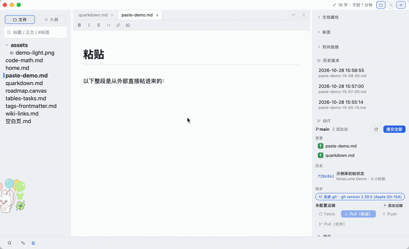
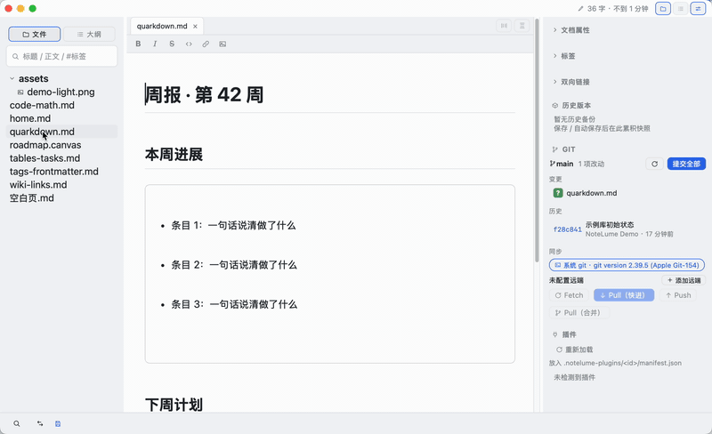

网页剪藏
浏览器扩展一键把网页正文存进本地库，图片按内容去重进 assets/，文末自动关联库内相关笔记。
本地 Markdown 编辑器。你的笔记就是一堆标准 .md 文件，躺在自己的文件夹里——秒开、离线、零格式锁定。
Markdown 与富文本双向无损往返。KaTeX 公式、Mermaid 图表、合并单元格表格，都在渲染态直接编辑，不用切源码模式。
[[双链]] 输入补全、#标签 全局视图、双向链接、全库搜索、Canvas 知识图谱——都对着你自己的文件夹干活。
纯 GFM 文件，Typora 和 Obsidian 能直接打开同一份库。默认不联网、不上传，删除进系统回收站；要接大模型时自己填 API 端口，数据直达你配置的服务。





粘贴即净。从 AI 对话框、飞书、公众号复制的内容，
进编辑器前就摘掉杂质。
代码块的「复制」按钮、行号装订线、空段落串联，在写入前自动清理，不用粘完再手修第二遍。
让笔记可编程。.var、.foreach、.if
直接写进 Markdown，约 200 个内置函数。
快照式预览，光标移出指令区即出结果，源文件一个字节不动。不用指令的文档仍是纯 GFM。
Git 长在里面。状态、历史、diff、提交、冲突解决，
全部内建。
git2 引擎，机器上没装 git 也能 fetch 和 pull。Word 导入同样离线直读，落库前可视化校对。